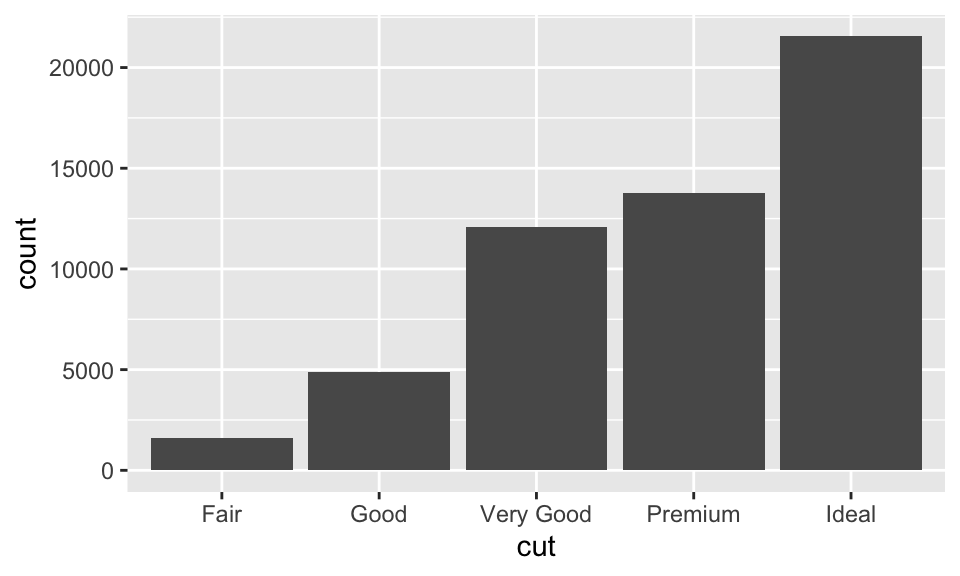

10 探索性資料分析
本章為 Wickham and Grolemund (2016) 第 5 章內容。
資料一拿來就先跑跑看長什麼樣子！
10.1 事前準備
探索性資料分析（Exploratory Data Analysis, EDA）的目標就是要更了解資料，而步驟可以為：
構思關於這筆資料的問題。
透過視覺化、轉換和建模，試著尋找答案。
經由所得的結果，重整原先的問題，或者構思、增加新的問題。
10.2 問題
Far better an approximate answer to the right question, which is often vague, than an exact answer to the wrong question, which can always be made precise.
—John Tukey
你可以問這兩類的問題：
What type of variation occurs within my variables?
What type of covariation occurs between my variables?
10.3 Variation
Variation 即每次測量變數值所得的趨勢（tendency）。每個變數都有自己的 variation，而要看出 variation，最好的方法是視覺化變數值的分配。
10.3.1 視覺化分配
如果是類別變數，我們可以使用 bar chart 來視覺化，因為它只有一小組變數值，而存成 factors 或 characters 的向量，如：
ggplot(data = diamonds) +
geom_bar(mapping = aes(x = cut))
也可以使用 dplyr 的 count() 來計算究竟各種品質的鑽石有多少，如：
diamonds %>%
count(cut)## # A tibble: 5 × 2
## cut n
## <ord> <int>
## 1 Fair 1610
## 2 Good 4906
## 3 Very Good 12082
## 4 Premium 13791
## 5 Ideal 21551如果是連續變數，例如數字與日期時間，我們則要使用 histogram，如：
# binwidth 引數即直方圖的直方寬度
ggplot(data = diamonds) +
geom_histogram(mapping = aes(x = carat), binwidth = 0.5)我們也可以用 count() 來計算，如：
diamonds %>%
count(cut_width(carat, 0.5))## # A tibble: 11 × 2
## `cut_width(carat, 0.5)` n
## <fct> <int>
## 1 [-0.25,0.25] 785
## 2 (0.25,0.75] 29498
## 3 (0.75,1.25] 15977
## 4 (1.25,1.75] 5313
## 5 (1.75,2.25] 2002
## 6 (2.25,2.75] 322
## 7 (2.75,3.25] 32
## 8 (3.25,3.75] 5
## 9 (3.75,4.25] 4
## 10 (4.25,4.75] 1
## 11 (4.75,5.25] 1如果想要重疊多個直方圖，使用 geom_frepoly() 而非 geom_histogram()。兩者的算法一樣，但前者以線來呈現，後者以直方來呈現，如：
ggplot(data = diamonds, mapping = aes(x = carat, color = cut)) +
geom_freqpoly(binwidth = 0.1)10.3.2 代表性的變數值
哪些是變數值經常出現？哪些變數值很少出現？其中有什麼規律？
ggplot(data = diamonds, mapping = aes(x = carat)) +
geom_histogram(binwidth = 0.01)為何克拉數為整數與某些常見的有理數的觀察值特別多？為何每個高峰的右側都比左側更緩？為何超過 3 克拉的鑽石很稀有？
類似的值的群集（cluster）通常意味著資料中有子群（subgroup）。我們可以質問幾個問題：
每個 subgroup 中的觀察值與其他 subgroups 之間有何相異或相似？
如何描述或解釋群集？
為何群集的外觀可能產生誤導？
10.3.3 不尋常的變數值
Outliers 即不尋常的變數值，可能源自資料輸入錯誤，也可能是一些不一樣的東西。
要注意的是，當樣本很大時，使用直方圖很難看出 outliers；例如上一張圖中，事實上 3 克拉到 5 克拉之間都還有觀察值，可是從直方圖幾乎看不出來。我們可以透過 coord_cartesian()，來改變 y 軸的上下限，這樣就可以辨識稀有的觀察值了，如：
ggplot(diamonds) +
geom_histogram(mapping = aes(x = y), binwidth = 0.5) +
coord_cartesian(ylim = c(0, 50))或者，我們也可以使用 dplyr，列出寬度小於 3 mm 或超過 20 mm 的觀察值：
unusual <- diamonds %>%
filter(y < 3 | y > 20) %>%
arrange(y)
unusual## # A tibble: 9 × 10
## carat cut color clarity depth table price x y z
## <dbl> <ord> <ord> <ord> <dbl> <dbl> <int> <dbl> <dbl> <dbl>
## 1 1 Very Good H VS2 63.3 53 5139 0 0 0
## 2 1.14 Fair G VS1 57.5 67 6381 0 0 0
## 3 1.56 Ideal G VS2 62.2 54 12800 0 0 0
## 4 1.2 Premium D VVS1 62.1 59 15686 0 0 0
## 5 2.25 Premium H SI2 62.8 59 18034 0 0 0
## 6 0.71 Good F SI2 64.1 60 2130 0 0 0
## 7 0.71 Good F SI2 64.1 60 2130 0 0 0
## 8 0.51 Ideal E VS1 61.8 55 2075 5.15 31.8 5.12
## 9 2 Premium H SI2 58.9 57 12210 8.09 58.9 8.06我們可以發現，寬度等於 0 mm 的鑽石根本不可能存在，顯然是打錯了；而寬度為 31.8 mm 與 58.9 mm 那兩個觀察值的價格也不合理。此種錯誤（像是輸入錯誤）所出現的 outliers 就該丟掉。但也不是逢 outliers 就該丟掉，如果其有真實的意義，那還是必須保留。
10.4 Missing Value
10.4.1 替換掉 Outliers
遇到 outliers，有兩種做法：
- 丟棄有奇怪的變數值的觀察值。可是，其中一個變數輸入錯誤不代表其他變數就也輸入錯誤。而且如果資料品質不良，可能最後什麼都不剩。
# 丟棄有奇怪的變數值的觀察
diamonds2 <- diamonds %>%
filter(between(y, 3, 20))- （推薦）把 outliers 的變數值換成
NA。我們可以使用mutate()與ifelse()，如：
# 把 outliers 的變數值換成 NA
diamonds2 <- diamonds %>%
mutate(y = ifelse(y < 3 | y > 20, NA, y))# 這樣畫出來的散佈圖就不會是 y 的 outliers
ggplot(data = diamonds2, mapping = aes(x = x, y = y)) +
geom_point(na.rm = TRUE) # 注意：設定 na.rm = TRUE，忽略掉 NA10.4.2 比較 NA 與否
有時候我們想了解具有 NA 的觀察值與有變數值的觀察值有何區別，那我們就可以使用 mutate() 與 is.na() 來記錄。在 nycflights13 的 flights 中，dep_time 如果是 NA，那表示航班取消。當我們想要比較取消航班與為取消航班之間的預計離開時間的差別，我們可以：
nycflights13::flights %>%
mutate(
cancelled = is.na(dep_time),
sched_hour = sched_dep_time %/% 100,
sched_min = sched_dep_time %% 100,
sched_dep_time = sched_hour + sched_min / 60) %>%
ggplot(mapping = aes(sched_dep_time)) +
geom_freqpoly(mapping = aes(color = cancelled), binwidth = 1/4)
不過，因為未取消航班比取消的航班多太多了，因此下個章節我們要對此做些改進。
10.5 Covariation
Covariation 即兩個或多個變數變動的關係。想要發覺 covariation，最好的辦法就是視覺化它。但如何視覺化則牽涉到變數型態的問題。
10.5.1 類別與連續變數
為什麼我們剛剛所使用的
geom_freqpoly()不太適合拿來「比較」變數？
這是因為，geom_freqpoly() 的高度（縱軸）是出現次數，所以說如果有一組遠小於另一組，像剛剛的情況，那我們就很難看出其形狀的差異。以下還有另一個例子為比較不同品質的鑽石之間的價格差異：
ggplot(data = diamonds, mapping = aes(x = price)) +
geom_freqpoly(mapping = aes(color = cut), binwidth = 500)這種時候，我們可以把 \(y\) 軸從呈現 “count”，改成呈現 “density”，即經過標準化的 count，在每組的多邊形底下的面積都為 \(1\)，如：
ggplot(data = diamonds, mapping = aes(x = price, y = ..density..)) +
geom_freqpoly(mapping = aes(color = cut), binwidth = 500)另一種把連續變數拆成類別變數然後呈現的方法是使用箱形圖（box plot），其可以把某些分佈的特徵給視覺化；即每個箱形圖中的箱子的底部都是 25 百分位，而頂部都是 75 百分位，箱子的中間則是中位數。我們可以大略看出分佈與偏態，而箱形圖中的點則是 outliers，線則是從箱子外延伸到非 outliers 的地方，如：
ggplot(data = diamonds, mapping = aes(x = cut, y = price)) +
geom_boxplot()看起來似乎 fair 的比較貴！為什麼？實際上是因為 fair 的鑽石相對比較大顆，如：
ggplot(data = diamonds, mapping = aes(x = cut, y = carat)) +
geom_boxplot()類別變數經常是有序的（例如 cut），但也有些並不然。如果類別變數無序，我們又希望它按照一定的方式來排序呢？可以使用 reorder()。例如，在 mpg 這個 dataset 中，class 其實是無序的，我們想知道各種 class 的 hwy 的話，以箱形圖描繪，就如：
ggplot(data = mpg, mapping = aes(x = class, y = hwy)) +
geom_boxplot()
那如果我們想要依照中位數來排序 class 的變數值的話，根據說明文檔，reorder 的語法如：
reorder(x, X, FUN = mean, ...,
order = is.ordered(x))因此可以：
ggplot(data = mpg) +
geom_boxplot(mapping = aes(
x = reorder(class, hwy, FUN = median),
y = hwy
))也可以仿效節 (coordinatedsystem) 的作法，加上 coord_flip()，將箱形圖旋轉 90 度，如：
ggplot(data = mpg) +
geom_boxplot(mapping = aes(
x = reorder(class, hwy, FUN = median),
y = hwy
)) + coord_flip()10.5.2 兩個類別變數
要視覺化兩個類別變數之間的 covariation，我們要計算各種組合有多少觀察值，如使用 geom_count()：
ggplot(data = diamonds) +
geom_count(mapping = aes(x = cut, y = color))或者以 dplyr 來計算：
diamonds %>%
count(color, cut)## # A tibble: 35 × 3
## color cut n
## <ord> <ord> <int>
## 1 D Fair 163
## 2 D Good 662
## 3 D Very Good 1513
## 4 D Premium 1603
## 5 D Ideal 2834
## 6 E Fair 224
## 7 E Good 933
## 8 E Very Good 2400
## 9 E Premium 2337
## 10 E Ideal 3903
## # … with 25 more rows這也可以接著以 geom_title() 來視覺化，如：
diamonds %>%
count(color, cut) %>%
ggplot(mapping = aes(x = color, y = cut)) +
geom_tile(mapping = aes(fill = n))而如果類別變數是無序的，我們可能會需要使用 seration 套件來同時重新排序 rows 與 columns；如果想要畫更大的熱圖，可能會需要使用 d3heatmap 或 heatmaply 套件。
10.5.3 兩個連續變數
要視覺化兩個連續變數的可以 geom_point() 畫出散佈圖，如：
ggplot(data = diamonds) +
geom_point(mapping = aes(x = carat, y = price))不過 overplot 的情況在小克拉的鑽石有點嚴重，因此我們可以更改透明度，如：
ggplot(data = diamonds) +
geom_point(mapping = aes(x = carat, y = price),
alpha = 1/100)但其實在很大的 dataset 中，更改透明度也不見得是好辦法。
除了單純描繪散佈圖以外，另一個方法是使用 bin。以前的 geom_histogram() 與 geom_freqpoly() 為單向度的 bin，我們現在要使用 geom_bin2d() 與 geom_hex() 來描繪兩個向度的 bin。
geom_bin2d() 與 geom_hex() 所繪製出來的圖形樣式相似，都是有二維的 bins，而使用 fill 來表示數量，差別在 geom_bin2d() 繪製出來的是矩形，而 geom_hex() 繪製出來的是六邊形，如：
ggplot(data = diamonds) +
geom_bin2d(mapping = aes(x = carat, y = price))
# install.packages("hexbin")
library(hexbin)
ggplot(data = diamonds) +
geom_hex(mapping = aes(x = carat, y = price))還有一種方式是把連續變數用 bin 拆成類別變數，然後繪製箱形圖，如下把克拉拆成類別變數：
ggplot(data = diamonds, mapping = aes(x = carat, y = price)) +
geom_boxplot(mapping = aes(group = cut_width(carat, 0.3)))但我們如果使用箱形圖的話，要怎麼看出各個 bin 的觀察值數量呢？我們可以設置 varwidth = TRUE，這會讓箱子的寬度與觀察值的數量成比例，如：
ggplot(data = diamonds, mapping = aes(x = carat, y = price)) +
geom_boxplot(mapping = aes(group = cut_width(carat, 0.3)), varwidth = TRUE)另一個看出觀察值數量的方法是使用 cut_number()，這會讓每個 bin 所包含的觀察值數量相當，以下圖而言，即克拉數大的鑽石很少：
ggplot(data = diamonds, mapping = aes(x = carat, y = price)) +
geom_boxplot(mapping = aes(group = cut_number(carat, 20)))10.6 模式與模型
模式（patterns）為兩個變數之間系統性的關係，如：
ggplot(data = faithful) +
geom_point(mapping = aes(x = eruptions, y = waiting))我們可以看出，等待時間越長伴隨著更長時間的爆發。
模型（models）則是從資料中萃取出 patterns 的工具。例如以 diamonds 資料集來說，我們很難弄清楚 cut 與 price 之間的關係，因為「cut 與 carat」及「carat 與 price」之間都密切相關。我們如果能使用模型移除掉 price 與 carat 之間的關係，那我們就能更清楚 cut 與 price 之間的關係。以下的程式碼就是先算出 carat 對 price 的效果，而其無法解釋的部份就在殘差項。我們能說，殘差項就撇除了 carat 對 price 的效果，那很有可能就是 cut 對 price 的效果，如：
library(modelr)
mod <- lm(log(price) ~ log(carat), data = diamonds)
diamonds2 <- diamonds %>%
add_residuals(mod) %>%
mutate(resid = exp(resid))
ggplot(data = diamonds2) +
geom_point(mapping = aes(x = carat, y = resid))在我們移除了 carat 對 price 的效果後，很清楚地，可以看出 cut 與 price 之間的關係；即給定鑽石大小，品質越好的鑽石越貴！（非常符合直覺）
我們也能從箱形圖看「品質越好的鑽石越貴」這一現象：
ggplot(data = diamonds2) +
geom_boxplot(mapping = aes(x = cut, y = resid))
本書之後會更深入探討關於模型的問題。